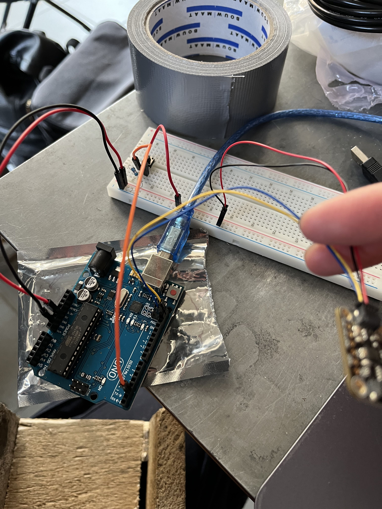
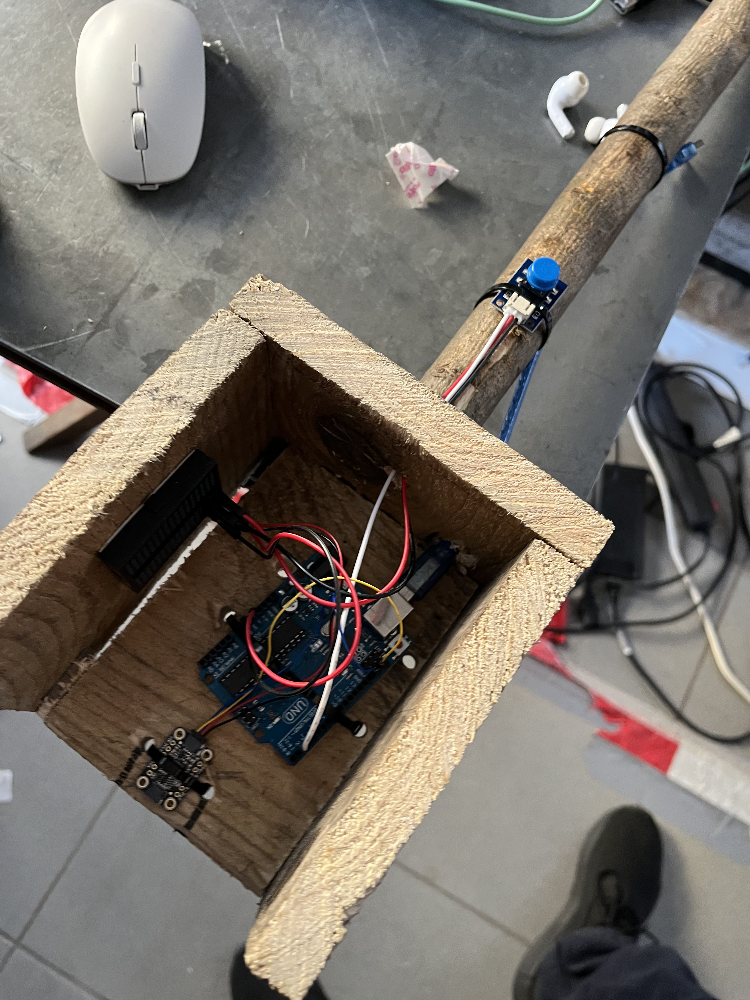
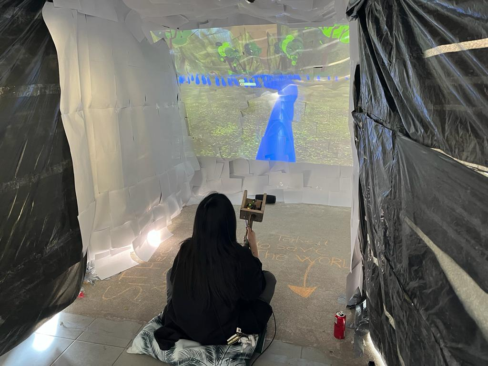

Skills:
Team:
Tools:
Timeline:
For this project we had 2 weeks of full time work in randomized teams to create an interactive exposition on various topics, such as Extended Reality, Artificial Creatures, etc. I was in an XR team.
We came up with an immersive firefighting game in Unity. The screen was to be projected in front of and around the player, and the player would use some sort of controller to point the hose to put out the fires in the game. I was responsible for finding a way to make such a controller work.
After trying and failing at using body tracking, connecting a phone over the internet to use the gyro and hacking a console controller, I decided to just build a controller with Arduino. I found a gyroscope part that connect to Arduino, found a basic scheme for connecting it, added a button to that, converted the output that I made Unity understand, and voila.
 
I also participated in development of the game itself. Teammates less experienced with Unity wanted to take the lead on development in order to build up some experience, while I supported them with advice and bug fixes.
In this project I was excited to dive into the world of developing physical devices, a topic that still holds my interest. This was also a curious exploration of a possible XR set up, one that is projected on the wall. An unexpected aspect I only realized at the expo is how it is more social then expected, since the player’s friends can watch and comment on the game.
